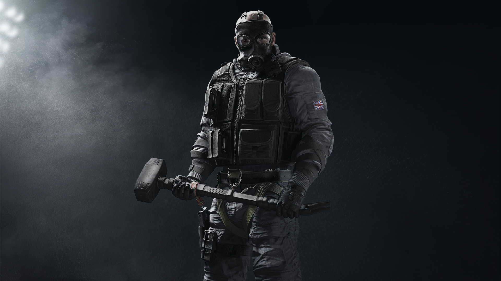
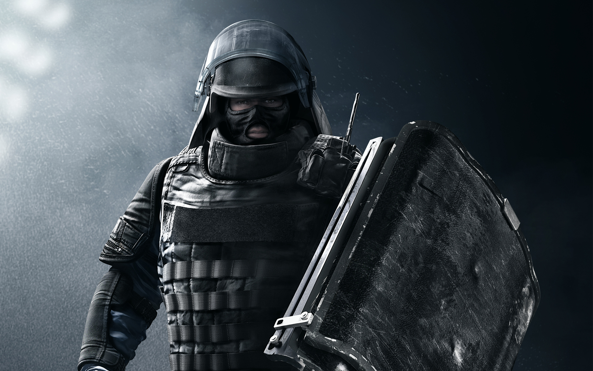

In deze game kan je als verschillende operators spelen.
Operators kun je zien als personages en met deze zogenoemde operators kan je aanvallen of verdedigen.
Er zijn inmiddels al 52 operators, die allemaal hun eigen gadgets bezitten. Bovendien heeft elke operator zijn of haar eigen nationaliteit.
Zo heb je bijvoorbeeld een Russische of Duitse operator.
Voordat Ubisoft begon met het ontwerpen van deze operators hebben ze eerst gekeken naar de geheime diensten van elk land. Zo hebben ze operators ontworpen die Amerikaans zijn en voor de FBI werken.
Ook hebben ze Russische operators ontworpen die bij de geheime dienst (Spetsnaz) van Rusland horen.
Hieronder heb ik mijn favoriete operators uitgelegd.

Sledge (attacker) is een Engelse operator die ervan houdt om erop los te rammen. In de game maakt hij gebruik van een hamer waarmee hij bijna alles kapot kan slaan, dit is dan ook meteen zijn gadget. Samen met een paar andere operators behoort hij tot de SAS, de geheime dienst van Engeland. Ik vind het super leuk om met sledge te spelen, omdat hij op sommige momenten nogal van pas kan zijn, vooral als de muren in de weg staan.
Montagne maakt deel uit van de Franse geheime dienst(GIGN) en is net als Slegde een attacker, maar in plaats van een hamer, heeft hij een uitschuifbare schild als gadget. Hiermee kan hij alle kogels van voren af kaatsen, waardoor je hem eigenlijk ook kan zien als menselijk schild. Zijn uitschuifbare schild heeft twee nadelen, ten eerste hij kan niet terug schieten en ten tweede hij kan van achter beschoten worden. Dit maakt het ook moeilijk om met hem te spelen.